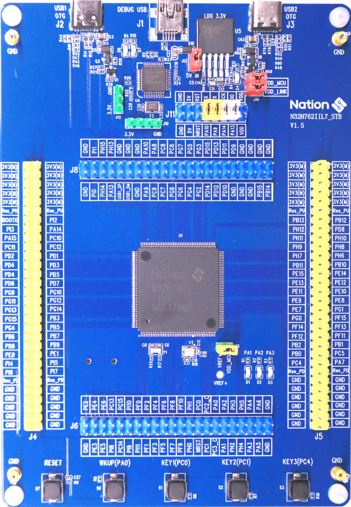

N32H762IIL7 Development Board
{kind=link}

N32H762IIL7 development board from Nations Technologies.
The N32H762IIL7 is a high-performance Cortex-M7 development board from Nations Technologies, featuring a 600 MHz ARM Cortex-M7 core, 1.5 MB SRAM, and 2 MB on-chip SIP Flash. It is designed for industrial control, IoT gateways, and other compute-intensive applications.
Features
OsTest LogFile:
The current NuttX BSP supports the following features:
MCU: N32H762IIL7 (ARM Cortex-M7 @ 600 MHz)
1.5 MB SRAM (configurable as ITCM/DTCM/AXI SRAM)
2 MB SIP Flash (with cache limitations, see note)
GPIO, EXTI, RCC, UART (console)
TIM: timer, PWM, oneshot, tickless
DMA (chained transfers)
USBHS (Device and Host modes, external ULPI PHY required for HS)
SDMMC (ADMA2 support)
CORDIC hardware accelerator
FLASH (MTD driver)
UID
Not yet supported: ADC, DAC, I2C, SPI, ETH, CAN/FDCAN, RTC, WDT.
Note
The SIP Flash on this chip does not work well with cache. For maximum performance, critical code should be placed in ITCM (zero-wait memory).
Pin Mapping
The following table lists the default pin assignments for the N32H762IIL7 board. For a complete list, refer to boards/arm/n32h7/n32h762iil7/include/board.h.
Pin |
Signal |
Function |
|---|---|---|
PA9 |
USART1_TX |
Console output (default) |
PA10 |
USART1_RX |
Console input (default) |
PA11 |
USBHS1_DM |
USBHS1 data- |
PA12 |
USBHS1_DP |
USBHS1 data+ |
PB14 |
USBHS2_DM |
USBHS2 data- |
PB15 |
USBHS2_DP |
USBHS2 data+ |
PD2 |
SDMMC1_CMD |
SD card command |
PC8 |
SDMMC1_D0 |
SD card data 0 |
PC9 |
SDMMC1_D1 |
SD card data 1 |
PC10 |
SDMMC1_D2 |
SD card data 2 |
PC11 |
SDMMC1_D3 |
SD card data 3 |
PC12 |
SDMMC1_CK |
SD card clock |
PC13 |
SDIO_NCD |
Card detect (input, pull-up) |
PC6 |
USBHS1_PWRON |
Power control for USBHS1 (output) |
PD12 |
USBHS2_PWRON |
Power control for USBHS2 (output) |
PE9 |
ATIM1_CH1 |
PWM channel 1 (TIM1) |
PE11 |
ATIM1_CH2 |
PWM channel 2 |
PE13 |
ATIM1_CH3 |
PWM channel 3 |
PE14 |
ATIM1_CH4 |
PWM channel 4 |
PE5 |
GTIMB1_CH1 |
PWM channel 1 (TIMB1) |
PE6 |
GTIMB1_CH2 |
PWM channel 2 |
PE0 |
GTIMB1_CH3 |
PWM channel 3 |
PE1 |
GTIMB1_CH4 |
PWM channel 4 |
PA6 |
GTIMA2_CH1 |
Capture input 1 (TIM2) |
… |
… |
… |
Power Supply
The board can be powered via USB (5V) or an external DC supply. It includes an on-board voltage regulator to generate 3.3V for the MCU and peripherals.
Installation
To build NuttX for this board, you will need the standard ARM GCC toolchain (version 10.2 or later) or Clang (14+). Installation instructions are the same as for other Cortex-M boards. For details, see the Installing guide.
Building NuttX
This board supports both the traditional Makefile build system and the newer CMake/Ninja build system.
- Makefile (GCC):
$ cd nuttx $ ./tools/configure.sh n32h762iil7:nsh $ make -j$(nproc)
- Makefile (Clang):
$ ./tools/configure.sh n32h762iil7:nsh $ make menuconfig # select Clang toolchain $ make -j$(nproc)
- CMake/Ninja (GCC only):
$ cd nuttx $ cmake -B build -DBOARD_CONFIG=n32h762iil7:nsh -G Ninja $ ninja -C build
The resulting image (nuttx.bin or nuttx.elf) can be found in the build directory.
Flashing and Debugging
The N32H762IIL7 can be programmed via JTAG/SWD using a debug probe.
Supported debugger: J-Link + Ozone (the J-Link patch must be obtained from Nations Technologies or extracted from the vendor’s .pack file). Other probes (e.g., ST-Link, CMSIS-DAP) are not currently supported.
The exact procedure depends on your J-Link configuration. Typically, you would use Ozone to load the ELF file and flash it.
Todo
Provide exact Ozone project settings if possible.
Configurations
The board identifier for tools/configure.sh is n32h762iil7. Currently, only one configuration is provided:
nsh
This configuration provides the NuttShell (NSH) over the USART1 console at 115200 baud. It includes all currently supported drivers and a selection of example applications (CoreMark, ostest, sdbench, osperf, ramspeed, etc.). It is the recommended starting point for evaluation.
$ ./tools/configure.sh n32h762iil7:nsh $ make
Note
Additional configurations (e.g., usb, sdmmc) may be added in the
future as more peripherals are ported.
License Exceptions
The N32H7 port is entirely original work and is licensed under the Apache 2.0 license, with no third-party proprietary code included.